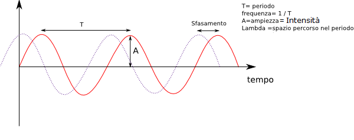

Sound
The sound is an acoustic phenomenon that is the generation of a vibration of an elastic body, which generate waves that reach our ear, usually through the air. A sound can be defined, the frequency , the number of vibrations per second. The sound of "LA" center corresponds to a number of waves per second was 440. The frequency then determines the pitch, in fact we can define the following feature:
- The sound is sharper, the more the number of vibrations is most pronounced
- The sound is more serious if the number is less vibration.
L ' intensity identifies the amplitude of vibration, and determining the volume, according to this rule:
-
How
- greater the amplitude, the higher the volume.

Stamp features of each sound depends on the number and intensity of individual harmonics generated by the sound
essential and therefore the shape of the wave.
The sound is then the basis for making music with any kind of musical instrument, it being understood that the generated music is pleasant.
The term comes from a pleasant acoustic fenomino called " beats "; these beats are made by sound waves
generated, which overlap so inperfetto.
From the concept of beats comes to consonance and dissonance , in fact:
are said to be dissonant sounds that produce beats between them.
The use of dissonant sounds is sometimes used to give more complexity to the melody.